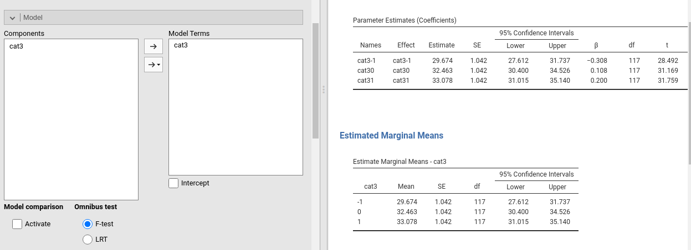

B How many contrasts?
B.1 Sufficiency of K-1 dummies
The fact that a linear model does not estimate all possible comparisons among levels of a categorical variable may appear puzzling. We have seen, in fact, that to represent a categorical variable with \(K\) levels, we only need \(K-1\) contrasts and not (\(K(K-1)/2\)), which will be the number of all possible comparisons. Let’s see why.
A linear model requires as many coefficients as are necessary to compute the predicted values for all possible levels of the independent variables. This means that if I plug in the model a certain value of the independent variable, a sensible predicted value is produced. In simple regression \(\hat{y_i}=2+3 \cdot x_i\) , for instance, if I plug \(x_i=4\), I get \(\hat{y_i}=14\), so it works. When you have a dichotomous independent variable, the model should work in the same way. For simplicity, assume the dichotomous IV is coded with the dummy coding system, so 0 vs 1, and the groups have the same N. The model is
\[ \hat{y_i}=a+b \begin{bmatrix} 0 \\ 1 \end{bmatrix} \] The model should be able to produce predicted values for \(x=0\) and for \(x=1\). It is easy to verify that this happens without problems: \(\hat{y_0}=a+b \cdot 0=a\), the dependent variable mean for group 0, and \(\hat{y_1}=a+b \cdot 1=a+b\), the dependent variable mean for group 1. Now, if the IV has three groups, \(x=\{1,2,3\}\), and I cast it with 2 dummies, I get this new model:
\[ \hat{y_i}=a+b_1 \begin{bmatrix} 0 \\ 1 \\ 0 \end{bmatrix} +b_2 \begin{bmatrix} 0 \\ 0 \\ 1 \end{bmatrix} \] Is this model able to produce three predicted values? First, for all dummies equal to zero, we have the expected value for group x=1, so \(a=\bar{y}_1\). Therefore \(b_1=\bar{y}_2-a=\bar{y}_2-\bar{y}_1\) and \(b_2=\bar{y}_3-a=\bar{y}_3-\bar{y}_1\). Thus:
for \(x=1\), the two dummies have values \(0\) and \(0\), so the predicted value is \(\hat{y_1}=a+b_1 \cdot 0 +b_2 \cdot 0 =\bar{y}_1\).
for \(x=2\), the two dummies have values \(1\) and \(0\), so the predicted value is \(\hat{y_2}=a+b_1 \cdot 1 +b_2 \cdot 0 =a+b_1=\bar{y}_1+\bar{y}_2-\bar{y}_1=\bar{y}_2\).
for \(x=3\), the two dummies have values \(0\) and \(1\), so the predicted value is \(\hat{y_3}=a+b_1 \cdot 0 +b_2 \cdot 1 =a+b_2=\bar{y}_1+\bar{y}_3-\bar{y}_1=\bar{y}_3\).
No other coefficient or term is needed to account for all differences in the dependent variable due to independent variable. In fact, if a third dummy is inserted here, its coefficient must be necessarily zero, otherwise the predicted values will be biased, so the third dummy is redundant.
Often readers wonder if this works also for other coding systems. Sure it does, it is just a little more complicated to see ti. Take the deviation method. Here the model for three-group IV is:
\[ \hat{y_i}=a+b_1 \begin{bmatrix} -1 \\ 1 \\ 0 \end{bmatrix} +b_2 \begin{bmatrix} -1 \\ 0 \\ 1 \end{bmatrix} \]
For \(x=1\), the two dummies have values \(-1\) and \(-1\), so the predicted value is \(\hat{y_1}=a-b_1-b_2\). For \(x=2\), the two dummies have values \(0\) and \(1\), so the predicted value is \(\hat{y_2}=a+b_1 \cdot 1 +b_2 \cdot 0 =a+b_1\). For \(x=3\), the two dummies have values \(0\) and \(1\), so the predicted value is \(\hat{y_2}=a+b_1 \cdot 0 +b_2 \cdot 1 =a+b_2\). Are they the correct expected values?
First, here the intercept \(a\) is the expected mean of the dependent variable, namely \((\bar{y}_1+\bar{y}_2+\bar{y}_3)/3\), because both contrast variables are centered to 0. Therefore, \(b_1=\bar{y}_2-a\) and \(b_1=\bar{y}_3-a\). So:
- For \(x=1\), we have \(\hat{y_1}=a-b_1-b_2=3a-\bar{y}_2-\bar{y}_3=\bar{y}_1+\bar{y}_2+\bar{y}_3-\bar{y}_2+\bar{y}_3=\bar{y}_1\)
- For \(x=2\), we have \(\hat{y_2}=a+b_1=a+\bar{y}_2-a=\bar{y}_2\)
- For \(x=2\), we have \(\hat{y_3}=a+b_2=a+\bar{y}_3-a=\bar{y}_3\)
One can show that it works for any coding system offered by GAMLj.
B.2 Zero-intercept ANOVA
The demonstration in B may explain also a curious phenomenon, which often surprises users of the linear model (independently of the software used). If one estimates a GLM with categorical IVs without the intercept, the model consists of K coefficients, where K is the number of groups, and the coefficients values are the means of the dependent variable for the three groups. These are called zero-intercepts models. Using manymodels data, a GLM with cat3 as independent, ycont as dependent, and no intercept, we get these coefficients:

It is clear that without an intercept, the three predicted values required here can be estimated by simply recasting the model as follows:
\[ \hat{y_i}=\bar{y}_1 \begin{bmatrix} 1 \\ 0 \\ 0 \end{bmatrix} +\bar{y}_2 \begin{bmatrix} 0 \\ 1 \\ 0 \end{bmatrix}+ \bar{y}_3 \begin{bmatrix} 0 \\ 0 \\ 1 \end{bmatrix} \]
Almost any software does that automatically, including GAMLj.